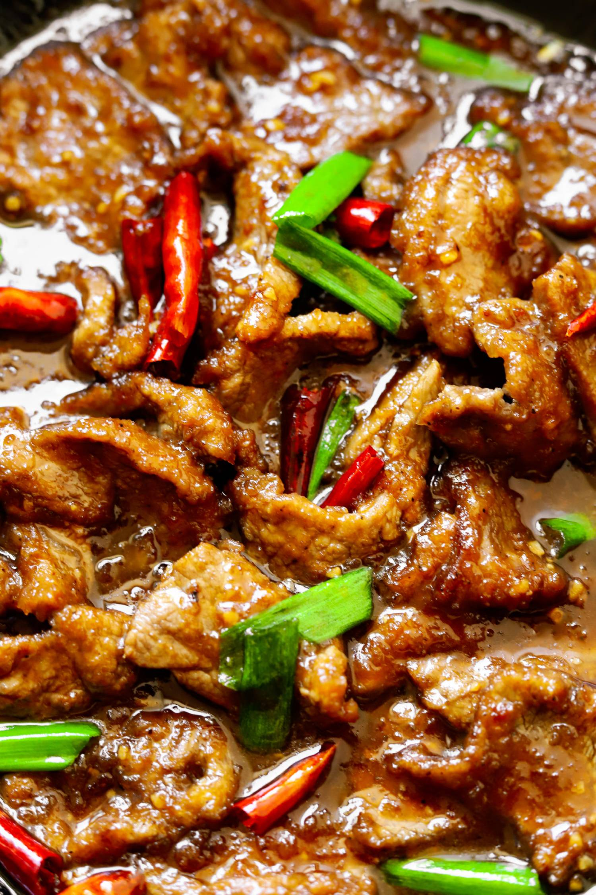

MONGOLIAN BEEF

Description
If you’ve never had Mongolian Beef, it’s tenderized crispy pieces of steak and green onions
coated in a slightly sweet and savory sauce made up of soy sauce, brown sugar, ginger, and garlic.
Contrary to the name, Mongolian Beef supposedly originated from Taiwan not Mongolia. It’s
commonly found on menus in American Chinese restaurants.
Ingridients
- 1 pound flank steak (sliced thin against the grain)
- 1/3 cup vegetable oil
- 1/3 cup cornstarch
- 1/4 teaspoon black pepper
- 1 1/2 teaspoon fresh ginger (minced)
- 2 teaspoons fresh garlic (minced)
- 1/2 cup low sodium soy sauce
- 1/3 cup water
- 1/4 cup dark brown sugar or light
- 1/2 tablespoon chili paste
- 7 to 8 dry red chilis (optional)
- 4 scallions (diagonally cut into long strips)
Cornstarch Slurry
- 1 tablespoon cornstarch + 1 tablespoon warm water (mixed together)
Steps
- Coat sliced steak in cornstarch and black pepper.
- Heat wok over high heat and add the vegetable oil. Once the oil is very hot, fry the steak in batches making sure not to overcrowd them. Fry on one side for 1 minute and then flip over and fry the other side for 1 more minute. It should be golden and crispy.
- Remove the steak from the wok and leave behind 1 tablespoon of oil in the wok. Drain the rest out.
- Add the garlic, ginger, soy sauce, water, brown sugar, and chili paste. Mix together and then add the dried chilis. Simmer for 2 to 3 minutes. Add the cornstarch slurry and simmer for 1 more minute or until the sauce has thickened.
- Toss back in the steak along with the scallions and mix until the sauce thickly coats the steak.
- Serve warm!
See more recipes